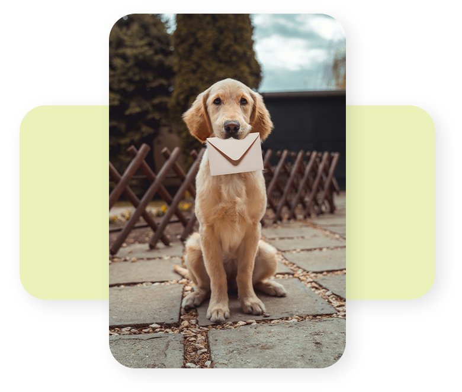
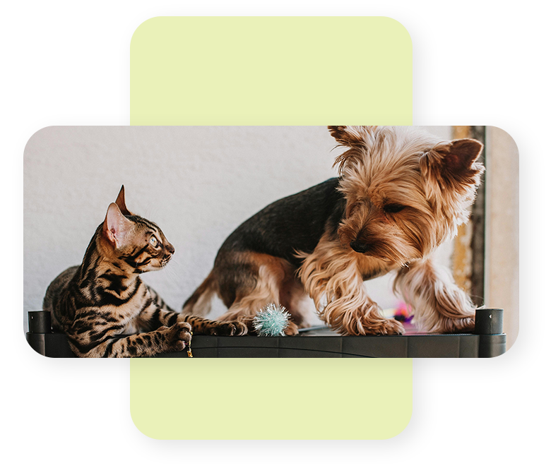

Ihr Tierarzt für Kleintiere im Landkreis Schweinfurt.
Herzlich willkommen bei Pfoten Docs Niederwerrn: Bei uns steht die Gesundheit Ihrer Lieblinge im Mittelpunkt – mit optimaler tierärztlicher Versorgung und höchster Qualität bei Diagnose und Therapie.
Inhouse-Labor & digitales Röntgen Termine nach Vereinbarung


Willkommen
Mit Leidenschaft und Fachwissen kümmern wir uns um das Wohl Ihrer Tiere – und haben stets ein offenes Ohr für Ihre Anliegen.
Vertrauen Sie auf die Erfahrung und das Einfühlungsvermögen unseres Teams aus Tierärzten und tiermedizinischen Fachangestellten. Wir setzen auf individuelle Beratung und gute Kommunikation – denn nur so können wir Ihre Bedürfnisse optimal erfüllen.
Individuelle Behandlungspläne nach modernsten Erkenntnissen
Ganzheitlicher Blick – inklusive Lebensumfeld und Verhalten
Beratung und Betreuung der Tierhalter inbegriffen
Unsere Leistungen
Von der Vorsorge bis zur Chirurgie
Moderne Tierheilkunde für Kleintiere – abgestimmt auf die Bedürfnisse Ihres Tieres.
Medizinische Versorgung
Gesundheitsvorsorge und Impfungen
Parasitenbehandlung und Prophylaxe
Reiseprophylaxe
Allgemeine Tiermedizin
Diagnostik mit modernen Technologien
Gängige Weichteiloperationen (z. B. Kastration, Tumorentfernung)
Wundversorgung
Zahnsteinentfernung und Zahnextraktion (ohne Dentalröntgen)
Welpenberatung – auch vor dem Kauf
Individuelle Ernährungsberatung
Sterbebegleitung, auch zu Hause
und vieles mehr
Technische Ausstattung
Digitales Röntgen
Inhouse-Labor für schnelle, präzise Blutuntersuchungen
Wenden Sie sich bitte an den Tierärztlichen Bezirksverband Unterfranken (kostenpflichtige Rufnummer).
01805 00 96 82
Wir suchen Verstärkung – und bilden aus!
Aktuell suchen wir eine Tierärztin / einen Tierarzt in Voll- oder Teilzeit. Auch Ausbildungsplätze zur tiermedizinischen Fachangestellten sind zu vergeben.